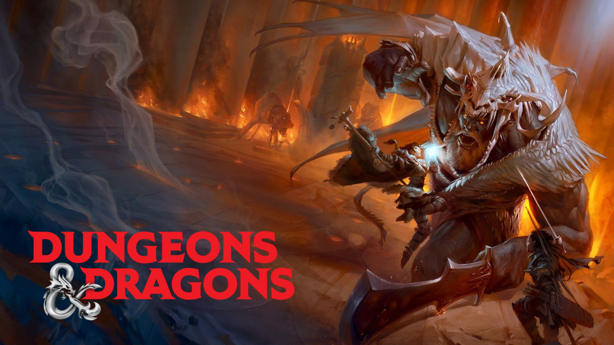
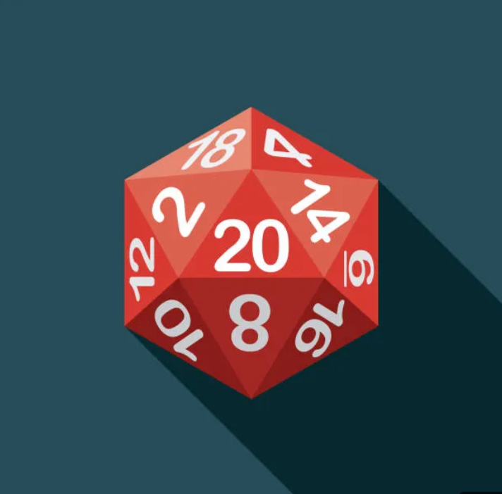
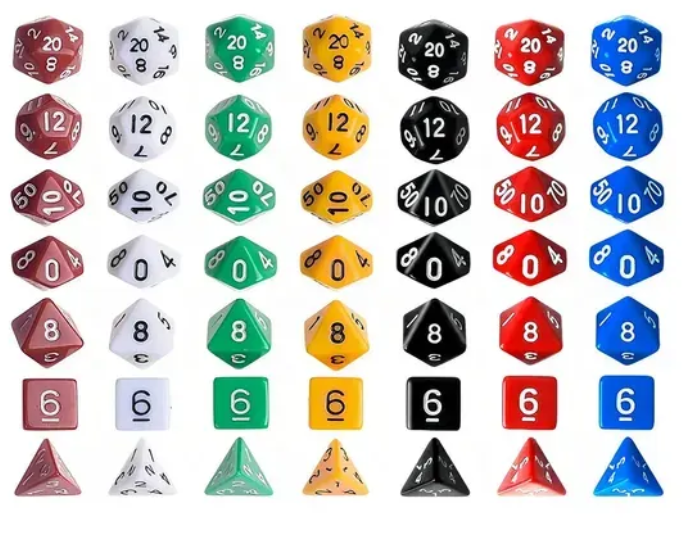
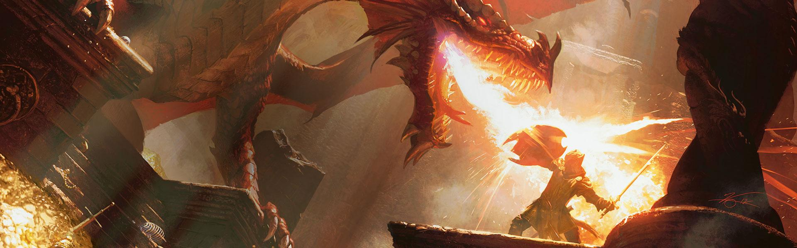

Sobre Dungeons & Dragons
Dungeons & Dragons (D&D) es un juego de rol de aventuras de fantasía. Creas un personaje que se une a otros para explorar un mundo y luchar contra monstruos.
Para jugar se necesita un Dungeon Master (DM) que narra la historia y controla el mundo. El resto de los jugadores controlan a sus héroes.
"Los juegos te dan la oportunidad de sobresalir, y si jugás en buena compañía, ni siquiera te importa si perdés porque disfrutaste del viaje." — Gary Gygax, creador de Dungeons & Dragons

Como jugar
Junta un Grupo
Cuatro o cinco jugadores más el Dungeon Master es un buen número. Es una cantidad manejable de jugadores para que el Dungeon Master pueda realizar un seguimiento, todos pueden caber alrededor de una mesa de comedor y permite una buena cantidad de interacción y estrategia del jugador.
Decide quién será el Dungeon Master
Una persona es el Dungeon Master (DM), el narrador que crea el mundo y controla a los enemigos. Los demás jugadores controlan a sus héroes.
En mazmorras y Dragones hay jugadores que controlan cada uno a un aventurero, y está el Dungeon Master (DM) que controla todo lo demás.
El DM tiene un papel importante y decidir quién será esto sucederá mucho antes de la primera sesión de D&D.
Crea los personajes
Cada jugador crea un personaje al completar su hoja de personaje de acuerdo con el Manual del jugador. (PDF Manual Del Jugador)
La hoja de personaje contiene todas las estadísticas básicas del jugador, como defensa, salud y habilidades.
También enumera el nombre de los personajes, habilidades, equipo, nivel, puntos de experiencia, etc.
La hoja de personaje generalmente se completa con lápiz para que los detalles se puedan borrar y actualizar a medida que su personaje avanza en sus aventuras.
Una decisión clave para la mayoría de los jugadores es qué raza y clase serán. Cada raza y clase tiene sus propios rasgos y constituye el punto de partida para la creación de tu personaje.
¿Eres un orco grande y corpulento que no puede esperar para golpear cosas?
¿Eres un pícaro elfo astuto que acechará en las sombras y atacará a los malos desprevenidos?
¿Eres un pícaro elfo astuto que acechará en las sombras y atacará a los malos desprevenidos?
Otra decisión importante es la alineación del personaje, que influirá en las decisiones que tome el personaje durante el juego. Hay nueve alineaciones que van desde Lawful Good hasta Chaotic Evil,Puedes ver mas sobre las Alineaciones dando Click Alineaciones
Los Dados Clásicos de D&D

El D20 es el dado más importante. Se usa para casi todas las tiradas importantes: ataques, salvaciones, chequeos de habilidad, etc. Un resultado de 20 es un éxito crítico, y un 1 es un fallo crítico.
Los demás dados (D4, D6, D8, D10, D12) se usan principalmente para calcular daño según el arma o hechizo.

Cada dado tiene su propio rol en el juego. El Dungeon Master decide cuándo tirar y qué dado usar según la situación.
Recursos Multimedia para Aventureros
🎥 Cómo se juega D&D - Explicación Oficial
Video de relleno para que no pese el archivo.
🎵 Música Épica de Fondo - Tavern Ambience
Audio de relleno para que no pese el archivo
Ambiente de taberna para tus sesiones (puedes reemplazar con tu propia música).
📺 Cómo Crear un Personaje en D&D 5e (Video Recomendado)
¿Cómo crear un personaje en D&D 5ª Edición?
Video explicativo paso a paso sobre cómo crear tu primer personaje.
Ver en YouTubeDetermina las Puntuaciónes de característica
Gran parte de lo que tu personaje hace en el juego depende de sus seis atributos: Fuerza, Destreza, Constitución, Inteligencia, Sabiduría y Carisma. Cada característica tiene una puntuación, la cual es el número que anotarás en tu hoja de personaje.
Generas las 6 puntuaciones de característica de tu personaje de forma aleatoria. Lanza 4 dados de 6 caras y apunta en una hoja de papel la suma total de los números de los 3 dados con la puntuación más alta. Realiza esta acción cinco veces, por lo que en total tendrás seis números. Si quieres ahorrar tiempo o no le gusta la idea de determinar al azar las puntuaciones de característica, puedes utilizar las siguientes puntuaciones en su lugar: 15, 14, 13, 12, 10, 8.
Ahora coge los seis números y escribe cada número al lado de uno de tus seis características de personaje para asignar puntuaciones a Fuerza, Destreza, Constitución, Inteligencia, Sabiduría y Carisma. Después, realiza los cambios en las puntuaciones de característica como resultado de tu elección de la raza del personaje.
Después de asignar las puntuaciones de característica, determina tus modificadores de característica usando sus puntuaciones y la Tabla de modificadores.
Ej para usar la tabla de Modificadores
Jorge el Barbaro necesita levantar una piedra,el DM pide que tire un D20 y si sale mayor a 15 puede levantarla
*Tira dado* Sale 13 ,ahora es cuando se tiene en cuenta la tabla
Si Jorge el Barbaro tiene 16 de Fuerza o más podria levantar la piedra por que se sumaria (+3) a la tirada
| Puntuacion | 1 | 2-3 | 4-5 | 6-7 | 8-9 | 10-11 | 12-13 | 14-15 | 16-17 | 18-19 | 20-21 | 22-23 | 24-25 | 26-27 | 28-29 | 30 |
|---|---|---|---|---|---|---|---|---|---|---|---|---|---|---|---|---|
| Modificador | -5 | -4 | -3 | -2 | -1 | +0 | +1 | +2 | +3 | +4 | +5 | +6 | +7 | +8 | +9 | +10 |
Sumario de puntuaciones de característica
Fuerza
Mide: atletismo natural, energía corporal
Importante para: guerrero
Mide: atletismo natural, energía corporal
Importante para: guerrero
Destreza
Mide: agilidad física, reflejos y equilibrio.
Importante para: pícaro
Mide: agilidad física, reflejos y equilibrio.
Importante para: pícaro
Constitución
Mide: salud y resistencia.
Importante para: guerrero
Mide: salud y resistencia.
Importante para: guerrero
Inteligencia
Mide: la agudeza mental, recordar información, habilidad analítica
Importante para: mago
Mide: la agudeza mental, recordar información, habilidad analítica
Importante para: mago
Sabiduría
Mide: percepción, intuición
Importante para: clérigo
Mide: percepción, intuición
Importante para: clérigo
Carisma
Mide: la confianza en uno mismo, la elocuencia, el liderazgo
Importante para: personajes líderes y diplomáticos
Mide: la confianza en uno mismo, la elocuencia, el liderazgo
Importante para: personajes líderes y diplomáticos
Seleccione una aventura
Esto es lo que van a hacer tus personajes. El Dungeon Master puede diseñar una aventura propia o usar una ya preparada.

Prepararlo
Dungeons & Dragons no necesita un tablero para jugar.
La aventura puede comenzar en un lugar como un pueblo, aldea o ciudad. El grupo habla sobre lo que está sucediendo sin necesidad de tablero.
Cuando hay un encuentro físico, puede ser útil tener un tablero que muestre dónde están los personajes y monstruos.
Algunos grupos usan pizarra, mapas impresos o miniaturas. Otros no usan nada.
Hacer cosas
Con dados e imaginación todo es posible.
Hay 7 tipos de dados necesarios para jugar D&D:
Hay 7 tipos de dados necesarios para jugar D&D:
- Dado de 4 caras (D4)
- Dado de 6 caras (D6)
- Dado de 8 caras (D8)
- Dado de 10 caras (D10)
- Dado de 12 caras (D12)
- Dado de 20 caras (D20) - El más importante
- Dado Percentil (D100)
El más importante es el D20.
Cuando querés hacer algo, tirás un D20. Cuanto mayor el resultado, más probabilidades de éxito.
Hay tres tipos principales de tiradas
- Causar daño: intentar golpear a un Goblin con una flecha.
- Usar una habilidad:usa la habilidad de Persuasión para tratar de convencer a un guardia de la ciudad para que te deje entrar en la casa de un noble.
- Usar una habilidad sin una habilidad asociada :tratar de mover una roca sobre una placa de presión de trampa necesitaría una tirada de Fuerza.
El resultado de los dados se agrega a las estadísticas de la hoja de personaje para dar el resultado final. El total se compara con el número objetivo (que a veces proviene de las reglas y, a veces, del Dungeon Master), si es más alto, el jugador tiene éxito - ¡hurra!
Fallos críticos y golpes críticos
Los grupos de D&D a menudo usan las reglas Fallos Criticos y Golpes Criticos para divertirse un poco.
Un Fallo crítico ocurre cuando un jugador saca un 1 en una tirada.
Cuando esto sucede, no solo fallan en la verificación de rollo, sino que también sucede algo malo. En lugar de simplemente fallar en dar una voltereta hacia atrás sobre el oso insecto, volteaste hacia atrás directamente hacia ellos y ahora estás tendido boca abajo en el piso
Si un jugador saca 20, ha obtenido un golpe crítico.
No solo tienen éxito, también sucede algo increíble. Cuando haces una voltereta hacia atrás sobre el oso insecto, pateas al goblin que está detrás de ellos en la cara y quedan boca abajo para el siguiente turno.
Como ganas
Dungeons and Dragons es el juego que no puedes ganar, pero que normalmente lo haces.
No hay "ganar" en el sentido tradicional. No es el primer jugador en 100 puntos o nivel 10 ni nada por el estilo.
Dicho esto, a lo largo del camino, su grupo experimentará pequeñas victorias que se sienten como victorias.
- Sube de nivel a tu personaje y obtén mejores estadísticas y habilidades
- Encontrar un amuleto encantado que otorga puntos de vida adicionales a tu personaje.
- Eliminando con éxito una cueva de orcos que han estado perturbando la ciudad local
Al final de una sesión, si todo el mundo se ha divertido, has ganado.
Una aventura típica puede durar un par de horas, pero una campaña puede durar varias sesiones. Un grupo de Dungeons and Dragons puede reunirse para un día de juego en el que avanzan a través de varias aventuras en un día.
Alineaciones
Cuando creas un personaje para D&D, deberás elegir una alineación...
Las Nueve Alineaciones
- Lawful Good (Legal Bueno)
- Neutral Good (Neutral Bueno)
- Chaotic Good (Caótico Bueno)
- Lawful Neutral (Legal Neutral)
- True Neutral
- Chaotic Neutral (Caótico Neutral)
- Lawful Evil (Legal Malvado)
- Neutral Evil (Neutral Malvado)
- Chaotic Evil (Caótico Malvado)
Los personajes Caóticos Buenos son los más comunes entre los héroes aventureros.
Exploración
Interacción Social
Combate
La tabla de alineación
Las nueve alineaciones existen en un gráfico. Ética (Legal, Neutral y Caótica) en un eje y moral (Bien, Neutral y Mal) en el otro eje.
| Lawful Good Legal Bueno |
Lawful Neutral Legal Neutral |
Lawful Evil Legal Malvado |
| Neutral Good Neutral Bueno |
True Neutral Neutral |
Neutral Evil Neutral Malvado |
| Chaotic Good Caótico Bueno |
Chaotic Neutral Caótico Neutral |
Chaotic Evil Caótico Malvado |
¿Qué pasa con la alineación de animales y criaturas?
Se piensa que los animales y las criaturas que no pueden emprender acciones morales no están alineados. Están siguiendo sus instintos para responder a la situación frente a ellos, en lugar de responder con una comprensión intelectual de las reglas sociales y las consecuencias de sus decisiones.
Considere las alineaciones de su grupo
Si el grupo en el que estás jugando tiene una mezcla de personajes buenos y malos, puede ser difícil formar lealtades en el grupo.
Un grupo mixto crea una campaña interesante por un tiempo, pero eventualmente, el grupo se dividirá y los personajes pueden necesitar irse para mantenerse fieles a su alineación.
Alternativamente, el desarrollo del personaje podría llevar a los personajes a cambiar su alineación permitiéndoles trabajar juntos como un grupo sin problemas morales.
Legal vs Caótico
Este eje representa la Ética de tu personaje: cómo se relaciona con las leyes, las normas sociales, la autoridad y la libertad personal.
LEGAL
Los personajes Legales creen en el orden, las leyes y las tradiciones. Valoran la estructura, el honor y la responsabilidad.
- Respetan las leyes y las autoridades establecidas.
- Valoran el deber, el honor y las promesas.
- Prefieren la estabilidad y las reglas claras.
- Pueden ser justos o tiránicos, dependiendo de su moral.
NEUTRAL
Los personajes Neutrales en este eje no se inclinan fuertemente ni por el orden ni por el caos. Actúan según lo que les parece más práctico o razonable en cada momento.
- No tienen una fuerte preferencia por las leyes ni por la libertad absoluta.
- Evalúan cada situación de forma individual.
- Pueden seguir reglas cuando les conviene, pero no se sienten atados a ellas.
- Suelen ser flexibles y adaptables.
CAÓTICO
Los personajes Caóticos valoran la libertad y la individualidad por encima de las reglas. Desconfían de las autoridades y las estructuras rígidas.
- Valoran la libertad personal por sobre las leyes.
- Rechazan las reglas innecesarias o injustas.
- Actúan según sus impulsos y creencias personales.
- Pueden ser héroes libertarios o criminales impredecibles.
El Bien contra el Mal
Este eje representa la Moral de tu personaje: cómo trata a los demás, qué tan dispuesto está a ayudar o hacer daño, y qué valores tiene.
BUENO
Los personajes Buenos se preocupan por el bienestar de los demás. Tratan de hacer el bien, proteger a los inocentes y actuar con compasión.
- Valoran la vida y la dignidad de los demás.
- Están dispuestos a sacrificarse por otros.
- Buscan hacer el mundo un lugar mejor.
- Pueden ser héroes, sanadores o protectores.
NEUTRAL
Los personajes Neutrales en este eje no se inclinan fuertemente ni por el bien ni por el mal. Actúan según sus propios intereses o según lo que les parezca más conveniente.
- No buscan activamente hacer el bien ni el mal.
- Priorizan sus propias necesidades y las de su grupo cercano.
- Pueden ayudar o lastimar según lo que les convenga en el momento.
- Suelen ser prácticos y realistas.
MALVADO
Los personajes Malvados priorizan su propio beneficio, incluso si eso lastima a otros. Pueden ser crueles, egoístas o disfrutar del sufrimiento ajeno.
- Valoran el poder y el beneficio personal.
- Están dispuestos a lastimar a otros para conseguir lo que quieren.
- Pueden ser tiranos, manipuladores o asesinos.
- Algunos son malvados por ambición, otros por placer.
Los Tres Pilares de la Aventura
Toda aventura en Dungeons & Dragons se construye sobre tres pilares fundamentales. Estos pilares son la base de casi todas las sesiones de juego.
Exploración
Los personajes descubren el mundo que los rodea. Exploran mazmorras, bosques, ciudades, ruinas antiguas y lugares misteriosos. Resuelven acertijos, encuentran tesoros escondidos y descubren secretos.
¿Qué incluye?
Viajes, mapas, trampas, acertijos, descubrimientos y la sensación de maravilla.
Interacción Social
Los personajes interactúan con otros seres del mundo: aldeanos, nobles, mercaderes, villanos, aliados y criaturas fantásticas. Negocian, mienten, persuaden, intimidan o hacen amigos.
¿Qué incluye?
Diálogos, roleplay, engaños, alianzas, interrogatorios y drama.
Combate
Cuando las palabras fallan o los monstruos atacan, llega el momento de la batalla. Los personajes usan sus habilidades, armas y magia para derrotar a sus enemigos en combates tácticos y emocionantes.
¿Qué incluye?
Turnos, ataques, hechizos, estrategia, daño y momentos épicos de heroicidad.
Una buena sesión de D&D suele combinar los tres pilares. A veces una aventura se enfoca más en uno que en otro, pero los mejores momentos suelen surgir cuando los tres se entrelazan.